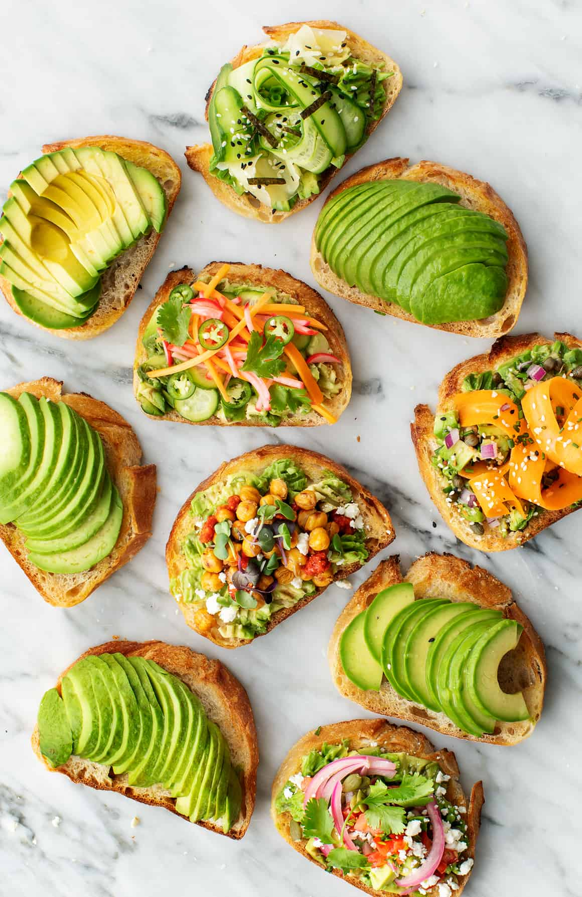

Rinse the rice thoroughly and soak in water for 30 minutes. This helps cook the rice evenly and makes it softer. Drain the rice before cooking.
Pour milk into a heavy-bottomed pot and bring to a boil over medium heat. Stir occasionally to prevent burning at the bottom. Add the drained rice and simmer, stirring frequently for about 30 minutes until rice is completely cooked.
Once rice is soft, add the condensed milk and sugar to taste. Continue stirring. The kheer should have a creamy consistency, not too thick. Adjust sweetness as per preference.
Add ground cardamom, a pinch of saffron strands (soaked in warm milk), and clarified butter. Stir well to distribute the flavors evenly throughout the kheer.
Transfer to serving bowls and top with chopped almonds and pistachios. Garnish with a few saffron strands. Serve warm or chilled as per preference. Best served at room temperature or cold.
💡 Chef's Tip: Stir the kheer frequently to prevent burning. The rice should break down completely into a creamy porridge. Serve it slightly warm for the best flavor, or chill in the refrigerator for up to 2 days before serving cold.